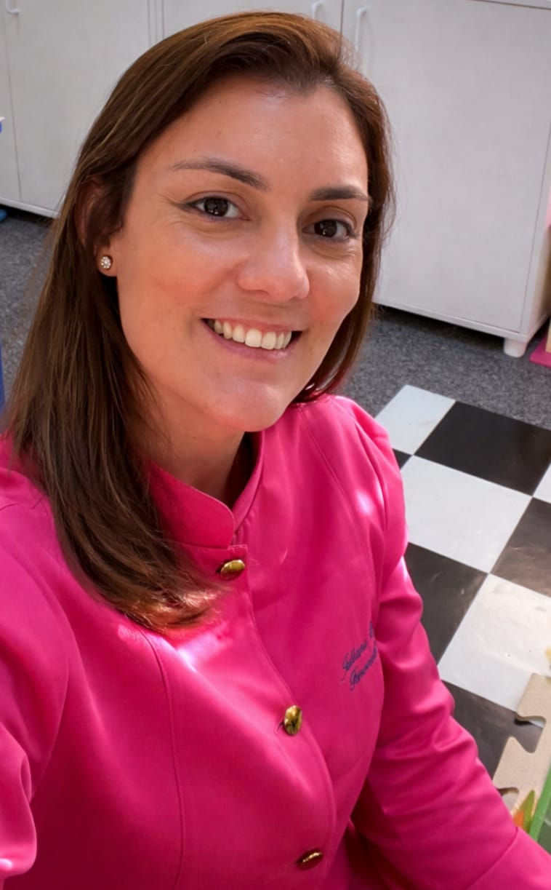

Linguagem
Fundamental para a interação social e expressão do pensamento. Trabalhamos o desenvolvimento da fala, compreensão e fluência verbal com abordagem individualizada.
Atendimento humanizado e especializado no Recreio dos Bandeirantes e Online.
Ciência e carinho dedicados ao seu desenvolvimento.
Cada área de atuação é um caminho para uma comunicação mais plena, livre e confiante.
Fundamental para a interação social e expressão do pensamento. Trabalhamos o desenvolvimento da fala, compreensão e fluência verbal com abordagem individualizada.
Abordagem especializada para fluência com empatia e técnica. Um espaço seguro onde a comunicação flui sem julgamentos, com resultados duradouros.
Intervenção focada no desenvolvimento da comunicação e autonomia. Cada criança no espectro tem seu ritmo único, e respeitamos cada etapa desta jornada.
Treinamento das habilidades auditivas para melhor compreensão sonora. Quando o ouvido capta bem, o aprendizado se expande em todas as direções.
Suporte essencial para superar dificuldades escolares e otimizar o potencial cognitivo. Leitura, escrita e raciocínio: bases para uma vida de conquistas.
Área especializada dedicada ao diagnóstico e tratamento de distúrbios de fala (disartria atáxica) e dificuldades de deglutição (disfagia) causadas por lesões no cerebelo ou vias que conectam ao sistema nervoso central.
Especialidade focada no estudo, prevenção, diagnóstico e tratamento de alterações estruturais e funcionais da região orofacial e cervical. Avaliando e reabilitando funções essenciais como respiração, sucção, mastigação, deglutição e fala.
Condição neurodesenvolvimental que afeta a capacidade de compreender e usar a linguagem oral, sem ser causada por déficits auditivos, intelectuais ou lesões neurológicas evidentes

Juliana Quintas atua desde 2009 com foco em avaliação e intervenção fonoaudiológica. Sua prática une evidência científica e um olhar individualizado para cada paciente — porque cada história de comunicação é única e merece atenção especial.
Com formação continuada em cursos, imersões e congressos nacionais e internacionais, Juliana oferece um atendimento que vai além da técnica: é um cuidado que considera o paciente em sua totalidade, envolvendo família e contexto social no processo terapêutico.
Sem dúvida, a Juliana Quintas é a melhor fonoaudióloga que já tive. Um trabalho excepcional, aliado a uma sensibilidade humana rara que faz toda a diferença no processo terapêutico.
Excelente experiência! Super profissional e atenciosa com as minhas filhas. Vimos uma melhora significativa desde o início do tratamento. Indico sem hesitar!
Profissional de competência e responsabilidade ímpares. Com muita dedicação e sensibilidade, Juliana ajuda tanto o paciente quanto a família durante todo o processo.